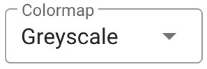
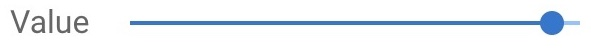

Application

We will create a more complete example application that will show how to use several parts the trame library. Developing a trame application requires the following coding steps:
- Imports for appropriate trame and vtk modules
- Create the necessary VTK pipelines
- Build trame Views
- Define the the GUI components required for interaction
- Develop the callbacks for the GUI components
- Start the application
We will start by editing 04_application/app.py which contain the basic structure of a trame app with the VTK rendering code base.
Imports
First, our trame imports have also changed. Thus, we will replace
from trame.layouts import SinglePage |
with
from trame.layouts import SinglePageWithDrawer |
We are creating a single page application with a drawer (trame.layouts), and we want to use one of trame‘s predefined widgets (trame.html) for displaying and interacting with visualization pipelines.
Finally, our VTK pipelines are fairly straight forward, but not available as one of the vtk examples. We will add the import for our VTK objects.
from vtkmodules.vtkCommonDataModel import vtkDataObject |
to create a three-dimensional (3D) mesh, a contour, and a cube axes legend to outline the computational domain.
VTK Pipelines
First, we read the data using the vtkXMLUnstructuredGridReader and the full file path, provided by adding CURRENT_DIRECTORY to the beginning of the relative file path.
# Read Data |
Second, we determine the available data arrays and build an array of dictionaries, dataset_arrays that contains the array name, value or id, range, and type (point or cell data). We also define the default array and the default minimum and maximum of the default array.
# Extract Array/Field information |
The dataset_arrays and defaults are used in several places of the initial pipelines, but we plan to enable switching between the available arrays for coloring and contouring.
Third, we create the mesh pipeline, which is simply a vtkDataSetMapper and a vtkActor that we add to the renderer.
# Mesh |
We want to be able to change the mesh representation, so we get a handle on the mesh_actor property and set the representation to surface, set the default point size, and turn off edge visibility.
# Mesh: Setup default representation to surface |
We also want to be able to change the mesh color map, so we get a handle on the mesh’s color lookup table and set the hue, saturation, and value ranges to create a rainbow color map, and build it.
# Mesh: Apply rainbow color map |
We finally want to be able to change the array or field to color by, so we get a handle on the mesh’s mapper and set the array to color by and the range of the array to the defaults, tell the mapper to use the appropriate scalar mode for the array, turn on the scalar visibility, and tell the mapper to use the scalar range assigned to the lookup table.
# Mesh: Color by default array |
Fourth, we create the contour pipeline, which uses a vtkContourFilter, a vtkDataSetMapper, and a vtkActor that we add to the renderer.
# Contour |
We want to be able to change the array or field to contour by, so we define the initial value as the midpoint between the default minimum and maximum of the default array, set the default array as the input array, and set the computed contour value.
# Contour: ContourBy default array |
We want to be able to change the contour representation, the contour color map, and the array to color by, so we initialize these defaults as we did for the mesh pipeline.
# Contour: Setup default representation to surface |
Fifth, we create the cube axes, which is a vtkCubeAxesActor that we add to the renderer.
# Cube Axes |
The vtkCubeAxesActor requires initialization by the bounds of the domain and the renderer camera.
# Cube Axes: Boundaries, camera, and styling |
Finally, we reset the renderer camera to initialize the view.
renderer.ResetCamera() |
trame Views
For this application, we want to enable dynamic switching between local and remote rendering. Thus, we need to set up both a local and remote trame views, and set the html_view to initially be the local_view.
local_view = vtk.VtkLocalView(renderWindow) |
Note: The interactive_ratio implies the desired image reduction fraction to enhance the frames per second during interaction. Here we set it to 1, which means the image will not be reduced.
GUI
We are creating a single page application with a drawer using SinglePageWithDrawer. By defauklt we get a title, toolbar, drawer, and a content section. So we instantiate a SinglePageWithDrawer with the title of “Viewer” and on_ready argument equal to html_view.update, which updates the three-dimensional visualization.
layout = SinglePageWithDrawer("Viewer", on_ready=html_view.update) |
Note: The layout.drawer as drawer syntax is used to get a reference to the drawer to set some of the drawer’s properties
We can fill in the content with a VContainer and attaching the html_view as the zeroth child in the content’s children array. This code creates the visualization space as we’ve done in all our previous examples.
with layout.content: |
Toolbar GUI

We want to create a toolbar with the application logo and title on one end and some standard buttons separated by a vertical divider on the other end. The VSpacer is used to push the content the right-side of the application toolbar, and the VDivider is used to create the vertical divder, and method standard_buttons encapsulates the gui code to produce these buttons.
with layout.toolbar: |

Three of the buttons have on/off states, so we will use a VCheckbox with the on_icon and off_icon properties and the v_model callback to switch between these states. The resetCamera button is a special case, so we use a VButton with the on_click callback to reset the camera.
def standard_buttons(): |
The resetCamera button and the dark checkbox are as they were in previous examples using built-in trame ($refs.view.resetCamera()) and Vuetify ($vuetify.theme.dark) callbacks.
The local_vs_remote checkbox is used to switch between the local and remote rendering, and leverages the local_vs_remote callback. The cube_axes_visibility checkbox is used to turn on and off the cube axes, and leverages the cube_axes_visibility callback.
Drawer GUI

We want to create a drawer with the trame pipeline widget, a horizontal divider, and pipeline cards. The pipeline cards are shown corresponding to the selected pipeline in the trame pipeline widget. We need create state for the active pipeline card, so we add this to the shared state that can be updated from the layout directly.
# State use to track active ui card |
We want a little wider drawer, so we set the width to 325 pixels. Next, we add the trame pipeline widget using the pipeline_widget function. Then, we use a VDivider to separate the trame widget from the pipeline cards. Finally, we add the pipeline cards using the mesh_card and contour_card functions.
with layout.drawer as drawer: |
Pipeline Widget

The trame widgets are easy to use. Here, we simply create the widget, define the pipelines and their relationships, and define references to the pipeline widgets two callback functions.
def pipeline_widget(): |
Default ui_card

The default GUI card is a simple card with a title, and a body. The card itself is shown (v_show) if the ui_name is the same as active_ui. We use the VCard to create the card, and the VCardTitle to create the card title, and the VCardText to create the space to add individual pipeline GUI components. The stylings for the card colors can be found at Material Design.
def ui_card(title, ui_name): |
mesh_card

The mesh_card containes strictly default GUI components of a pipeline. First, a dropdown menu for the visual representation type. Next, a row with two columns. One contains a dropdown menu for the array/field to color by, and the other a dropdown menu for which color map to use. Finally, a slider to control the opacity.
def mesh_card(): |
Since these are defaul pipeline elements, we will cover these items together with the contour_card individual components below.
contour_card

The contour_card contains a dropdown menu to select the array/field to contour by, a slider to control the contour value, and the default GUI components of a pipeline.
def contour_card(): |
For simplicity, we will cover these items the contour individual components below.
Note: * denotes essentially duplicate code\components from the mesh_card.
Default Components
The default components of a pipeline include the representation selection, the color by selection, the color map selection, and the opacity slider.
Representation GUI
First, we created a constant class Representation to enumerate the different representations.
class Representation: |

Second, we created a dropdown menu for the representation type. The VSelect component is used to create a dropdown menu. The v_model uses the state variable mesh_representation initialized to be a surface. The items is a list of tuples, where the first element is the display string (text) of the representation, and the second element is the value of the representation used for selection.
vuetify.VSelect( |
The update_mesh_representation callback is used to update the representation of the mesh.
The dropdown menu for the representation type for the contour pipeline is similar to the mesh pipeline, but replace the v_model line with the v_model line for the contour pipeline.
vuetify.VSelect( |
The update_contour_representation callback is used to update the representation of the contour.
Color By GUI

We created a dropdown menu for the color by. The VSelect component is used to create a dropdown menu. The v_model uses the state variable mesh_color_array_idx initialized to be the default_array, 0. The items is a list of tuples, where the first element is the display string (text) of the array name, and the second element is the value of the array used for selection. For items, we use the state variable array_list to create the list of arrays initialized by our dataset_arrays array of dictionaries we created at read time.
vuetify.VSelect( |
The update_mesh_color_by_name callback is used to update the color by array of the mesh.
The dropdown menu for the color by of the contour pipeline is similar to the mesh pipeline, but replace the v_model line with the v_model line for the contour pipeline.
vuetify.VSelect( |
The update_contour_representation callback is used to update the color by array of the contour.
Color Map GUI
First, we created a constant class LookupTable to enumerate the different color maps.
class LookupTable: |

Second, we created a dropdown menu for the color map. The VSelect component is used to create a dropdown menu. The v_model uses the state variable mesh_color_preset initialized to be the rainbow color map. The items is a list of tuples, where the first element is the display string (text) of the color map, and the second element is the value of the color map used for selection.
vuetify.VSelect( |
The update_mesh_color_preset callback is used to update the color map of the mesh.
The dropdown menu for the color map of the contour pipeline is similar to the mesh pipeline, but replace the v_model line with the v_model line for the contour pipeline.
vuetify.VSelect( |
The update_contour_color_preset callback is used to update the color map of the contour.
Opacity GUI

We created a slider for the opacity. The VSlider component is used to create a slider. The v_model uses the state variable mesh_opacity initialized to 1.0. The min is set to 0 and the max is set to 1. The step is set to 0.1.
vuetify.VSlider( |
The update_mesh_opacity callback is used to update the color map of the mesh.
The slider for the opacity of the contour pipeline is similar to the mesh pipeline, but replace the v_model line with the v_model line for the contour pipeline.
vuetify.VSlider( |
The update_contour_opacity callback is used to update the opacity of the contour.
Contour Components
Contour By GUI

We created a dropdown menu for the contour by. The VSelect component is used to create a dropdown menu. The v_model uses the state variable contour_by_array_idx initialized to be the default_array, 0. The items is a list of tuples, where the first element is the display string (text) of the array name, and the second element is the value of the array used for selection. For items, we use the state variable array_list to create the list of arrays initialized by our dataset_arrays array of dictionaries we created at read time.
vuetify.VSelect( |
The update_contour_by callback is used to update the contour by array of the contour.
Contour Value GUI
We created a slider for the contour value. The VSlider component is used to create a slider. The v_model uses the state variable contour_value initialized to mid-point of the selected contour by array. The min is set to minimum of the contour by array and the max is set to maximum of the contour by array. The step is set to 0.01 times the range of the contour by array.

vuetify.VSlider( |
The update_contour_value callback is used to update the value of the contour.
Callbacks
Toolbar Callbacks
The first toolbar callback is the cube_axes_visibility callback, which is used to turn on and off the cube axes. The update_cube_axes_visibility function is found by the @state.change decorator for cube_axes_visibility. Then we simply set the cube_axes actor’s Visibility property to the value of cube_axes_visibility, and update the view.
|
The second toolbar callback is the local_vs_remote callback, which is used to switch between the local and remote visualization. The update_local_vs_remote function is found by the @state.change decorator for local_vs_remote. Then we simply switch between the local_view and remote_view to the appropriate view. The complicated part is updating the layout by changing out the view in the layout.content. The child at children[0] is the VContainer and the second children[0] is the location of the html_view in the containers children. Finally, we update the view either shipping geometry (local rendering) or an image (remote rendering) to the client.
|
Drawer Callbacks
- Pipeline Widget Callbacks
- Representation Callbacks
- Color By Callbacks
- Color Map Callbacks
- Opacity Callbacks
- Contour Components Callbacks
Pipeline Widget Callbacks
When a pipeline is selected in the pipeline widget, we want to update the pipeline card to show in the drawer. Using the default actives_change function of trame pipeline widget, we simply update the state element active_ui to display the pipeline card of the selected pipeline.
# Selection Change |
When a pipeline visibility is toggled in the pipeline widget, we want to update the view to add or remove the toggled pipeline. Using the default visibility_change function of trame pipeline widget, we update the visibility of the appropriate pipeline actor using actor.SetVisibility function with the visibility accessed from the event["visible"] dictionary element.
# Visibility Change |
Representation Callbacks
The update_representation function updates the representation property of an actor to the value of mode.
# Representation Callbacks |
The update_mesh_representation function is found by the @state.change decorator for mesh_representation. We simply call the update_representation function with the mesh_actor and the mesh_representation state, and then update the view.
|
Likewise, the update_contour_representation function is found by the @state.change decorator for contour_representation. We simply call the update_representation function with the mesh_actor and the contour_representation state, and then update the view.
|
Color By Callbacks
The color_by_array function updates the SelectColorArray of the mapper of an actor to the value of array. These operations are the same as the ones we used setting up the initial pipeline, so we will not go through the individual commands again here.
# Color By Callbacks |
The update_mesh_color_by_name function is found by the @state.change decorator for mesh_color_array_idx. We simply call the color_by_array function with the mesh_actor and the array, and then update the view. The array is set using the mesh_color_array_idx state on the dataset_arrays array of dictionaries.
|
Likewise, the update_contour_color_by_name function is found by the @state.change decorator for contour_color_array_idx. We simply call the color_by_array function with the contour_actor and the array, and then update the view. The array is set using the contour_color_array_idx state on the dataset_arrays array of dictionaries.
|
Color Map Callbacks
The use_preset function updates the lut, lookup table, hue, saturation, and value range for the preset. We need the actor to get the lut, and the preset to determine the hue, saturation, and value_range.
# Color Map Callbacks |
The update_mesh_color_preset function is found by the @state.change decorator for mesh_color_preset. We simply call the use_preset function with the mesh_actor and the mesh_color_preset state, and then update the view.
|
The update_contour_color_preset function is found by the @state.change decorator for contour_color_preset. We simply call the use_preset function with the contour_actor and the contour_color_preset state, and then update the view.
|
Opacity Callbacks
The update_mesh_opacity function is found by the @state.change decorator for mesh_opacity. We simply use a mesh_actor property and the mesh_opacity state to SetOpacity, and then update the view.
# Opacity Callbacks |
The update_contour_opacity function is found by the @state.change decorator for contour_opacity. We simply use a contour_actor property and the contour_opacity state to SetOpacity, and then update the view.
|
Contour Callbacks
The update_contour_by function updates the SetInputArrayToProcess of the contour filter to the value of array. These operations are the same as the ones we used setting up the initial pipeline, so we will not go through the individual commands again here.
# Contour Callbacks |
the update_contour_by function is found by the @state.change decorator for contour_by_array_idx. We simply use the contour filter and the array, and then update the view. The array is set using the contour_by_array_idx state on the dataset_arrays array of dictionaries.
The update_contour_value function is found by the @state.change decorator for contour_value. We simply use a contour filter property and the contour_value state to SetValue, and then update the view.
|
Start
There is no change to the start function.
if __name__ == "__main__": |
Running the Application
python ./04_application/app.py --port 1234 |
Your browser should open automatically to http://localhost:1234/